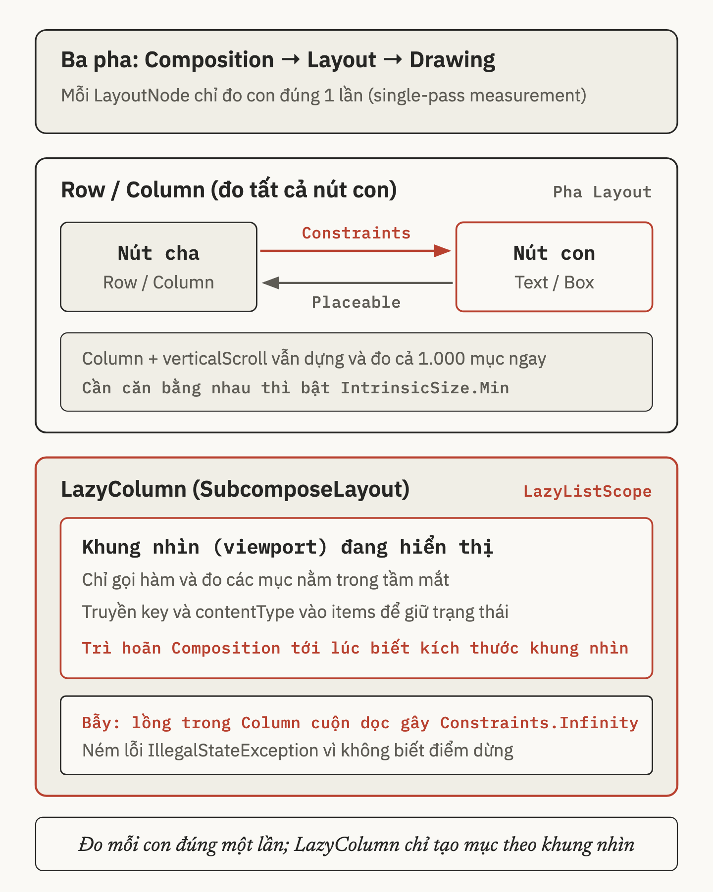

"Layout Compose: Row, Column, LazyColumn"
Bản 30 giây
Khi dựng màn hình, bạn xếp phần tử ngang bằng Row, dọc bằng Column hoặc chồng lên nhau bằng Box. Nếu danh sách dài hàng ngàn mục mà nhét hết vào Column, máy sẽ đo và vẽ tất cả cùng lúc gây đơ màn hình. Lúc đó bạn phải dùng LazyColumn để chỉ tạo và đo đúng vài mục đang lọt vào tầm mắt.
Cần biết trước
Vấn đề buộc nó ra đời
Trong hệ thống View cũ từ Android 1.0 (2008), RelativeLayout hay LinearLayout có layout_weight thường phải đo các View con tới 2 lần. Nếu bạn lồng nhiều tầng như vậy, số lần đo sẽ nhân đôi theo từng cấp và làm khung hình bị giật.
Muốn làm danh sách cuộn mượt với RecyclerView, bạn lại phải viết Adapter, ViewHolder và tập tin XML rời rạc. Chỉ để hiện một danh sách đơn giản, bạn phải nối ba bốn lớp lại với nhau rất tốn công.
Khi Jetpack Compose ra bản 1.0 năm 2021, Google đặt ra luật chỉ đo mỗi phần tử con đúng 1 lần (single-pass measurement). Đồng thời, LazyColumn thay thế RecyclerView chỉ bằng một khối lệnh nhận danh sách dữ liệu trực tiếp.
Nó thực sự là cái gì
Row và Column không phải là các ViewGroup nặng nề như trong hệ View cũ. Chúng là các hàm cấu hình nút bố cục (LayoutNode) chạy qua ba pha: Composition (tạo cây), Layout (đo và đặt chỗ) rồi Drawing (vẽ). Còn LazyColumn là bộ khung trì hoãn cả pha tạo cây lẫn pha đo, chỉ gọi hàm của những mục nằm trong khung nhìn (viewport).
Cơ chế

Ở pha Layout, nút cha truyền khung giới hạn kích thước (Constraints gồm rộng, cao tối thiểu và tối đa) xuống từng nút con. Mỗi nút con tự đo đúng một lần để trả về kích thước thật (Placeable), rồi nút cha đặt tọa độ cho chúng. Riêng LazyColumn dùng SubcomposeLayout (trì hoãn tạo cây con tới lúc đo) để biết khung nhìn trước rồi mới chạy LazyListScope. Khi bạn truyền key và contentType vào hàm items, LazyColumn sẽ giữ đúng trạng thái và dùng lại các nút cũ khi cuộn.
Đánh đổi
Luật chỉ đo một lần giúp cây giao diện sâu bao nhiêu tầng cũng chạy xong pha Layout rất nhanh theo thời gian tuyến tính. Đổi lại, cha không được đo con hai lần, nên khi cần căn bằng nhau bạn phải bật IntrinsicSize (hỏi trước kích thước). Với LazyColumn, việc tách từng mục qua SubcomposeLayout tốn chi phí quản lý, nên sẽ chậm hơn Column nếu danh sách chỉ có vài dòng.
Nguyên lý gốc
Luôn giới hạn công việc trong một lượt duyệt duy nhất và chỉ tạo những phần tử thật sự xuất hiện trước mắt người dùng.
Key insight
ColumnthêmverticalScrollvẫn dựng và đo cả 1.000 mục ngay lúc mở màn hình, chỉ cóLazyColumnmới tạo mục theo khung nhìn.
Ví von
Column giống như in sẵn cả cuốn danh bạ 1.000 trang trải dài ra sàn nhà rồi mới cho bạn đi dọc xem. Còn LazyColumn giống màn hình đọc sách điện tử, tới trang nào mới nạp chữ của đúng trang đó lên.
Khuôn mẫu chuẩn
@Composable
fun UserDirectory(users: List<User>) {
LazyColumn {
items(
items = users,
key = { user -> user.id },
contentType = { user -> user.role }
) { user ->
Row { Text(text = user.name) }
}
}
}
Bẫy & ranh giới
Nếu bạn bọc LazyColumn không giới hạn chiều cao trong một Column bật verticalScroll, ứng dụng sẽ sập ngay với lỗi IllegalStateException. Lý do là khung cuộn ngoài truyền chiều cao tối đa bằng vô cực (Constraints.Infinity), làm LazyColumn không biết dừng tạo mục ở đâu. Ngoài ra, quên truyền key vào hàm items sẽ làm các dòng bị tráo trạng thái và chạy lại Recomposition thừa khi xóa mục đầu.
Câu hỏi thực chiến
Hỏi: Danh sách chỉ có khoảng 5 mục cố định thì có nên dùng LazyColumn cho đồng bộ không?
Không nên. LazyColumn phải khởi tạo bộ quản lý cuộn và SubcomposeLayout nên tốn nhiều bộ nhớ hơn một Column thường. Với vài mục ít ỏi và cố định, bạn chỉ cần dùng Column kết hợp Modifier.verticalScroll là gọn và nhanh nhất.
Hỏi: Vì sao lồng LazyColumn vào trong một Column có cuộn dọc lại làm sập ứng dụng?
Vì Column có cuộn dọc cho phép con của nó dài tới vô cực (Constraints.Infinity). Khi nhận chiều cao vô cực, LazyColumn không tính được khung nhìn cao bao nhiêu nên sẽ ném lỗi IllegalStateException. Muốn lồng nhau, bạn bắt buộc phải gán một chiều cao cố định như Modifier.height cho danh sách bên trong.
Hỏi: Tham số contentType trong hàm items của LazyColumn giúp ích gì cho hiệu năng?
Nó giúp LazyColumn biết những mục nào có cùng cấu trúc giao diện để tái sử dụng lại nút bố cục khi cuộn. Nếu danh sách trộn lẫn tiêu đề và tin nhắn, truyền contentType sẽ ngăn Compose lấy nhầm khung của tiêu đề gắn cho tin nhắn.
Hỏi: Khi nào thì buộc phải dùng IntrinsicSize.Min trong Row hoặc Column?
Khi bạn muốn phần tử con co giãn theo anh em nằm cạnh nó, như thanh kẻ dọc cao bằng dòng chữ bên cạnh. Vì Compose cấm đo con hai lần, IntrinsicSize.Min cho phép Row hỏi trước chiều cao cần thiết rồi mới chốt khung Constraints để đo thật.
Ý bắt buộc khi giải thích lại
- Giải thích được luật đo một lần (single-pass measurement): cha truyền Constraints xuống, con trả về Placeable rồi cha đặt tọa độ.
- Phân biệt được Column có verticalScroll (tạo hết mọi mục ngay từ đầu) với LazyColumn (chỉ tạo mục trong khung nhìn qua SubcomposeLayout).
- Nêu được nguyên nhân lỗi IllegalStateException khi lồng LazyColumn chiều cao vô cực và vai trò của key, contentType trong hàm items.
- Viết lại được khuôn mẫu chuẩn từ trí nhớ.
Nguồn
- Layout basics — Android Developers
- Lists and grids — Android Developers
- Custom layouts — Android Developers
- Jetpack Compose Phases — Android Developers